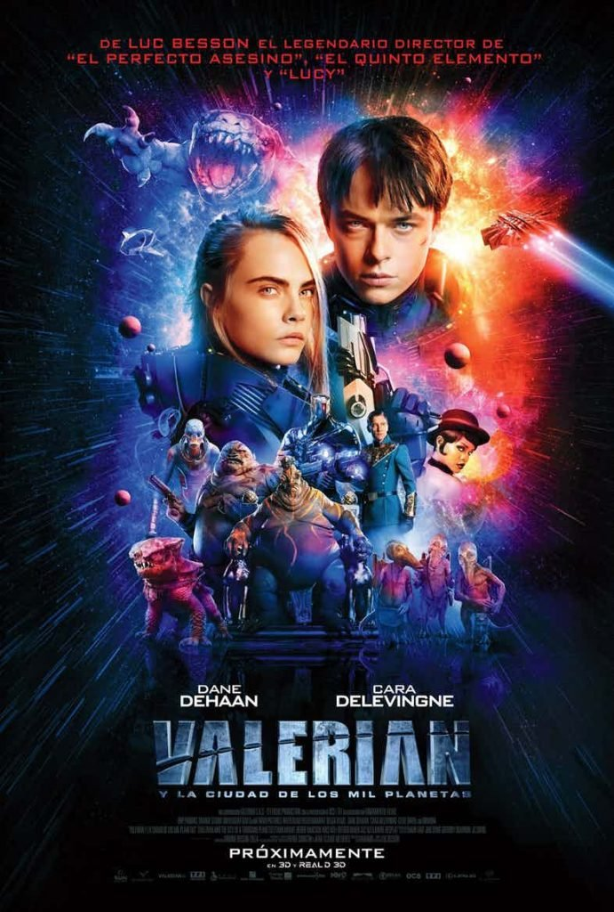
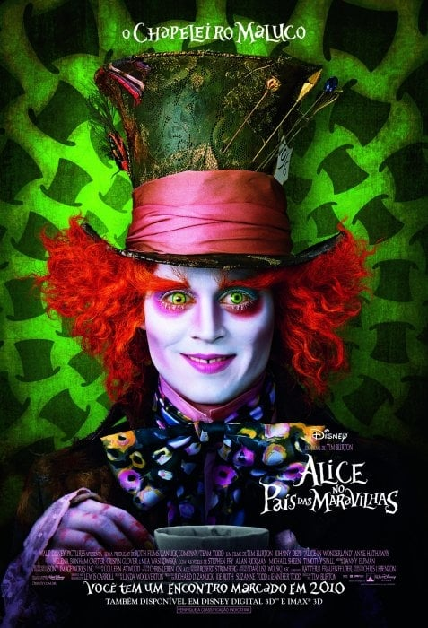
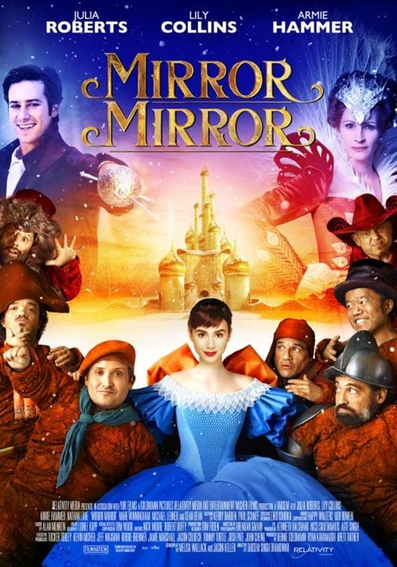
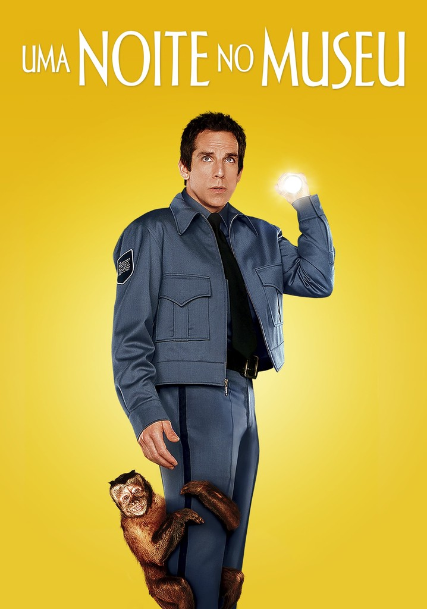

Mad Max:
Estrada da Fúria
Max se vê no meio de uma guerra mortal iniciada pela Imperatriz Furiosa, que tenta salvar um grupo de garotas. Também tentando fugir, Max aceita ajudá-la.
Max se vê no meio de uma guerra mortal iniciada pela Imperatriz Furiosa, que tenta salvar um grupo de garotas. Também tentando fugir, Max aceita ajudá-la.
Valérian é um agente viajante do tempo e do espaço que luta ao lado da parceira Laureline, por quem é apaixonado, em defesa da Terra e seus planetas aliados, continuamente atacados por bandidos intergaláticos.
Em uma festa da nobreza, a jovem vê um coelho branco. Alice o segue e cai em um buraco, indo parar em um mundo estranho: o País das Maravilhas.
A Rainha Má, madrasta de Branca de Neve, após a morte do rei, prende a enteada no quarto e assume o controle do reino.
O novo segurança do Museu de História Natural de Nova York faz uma grande descoberta. Por causa de uma antiga maldição egípcia, os animais, pássaros, insetos e outras peças em exibição ganham vida quando os visitantes vão embora.
